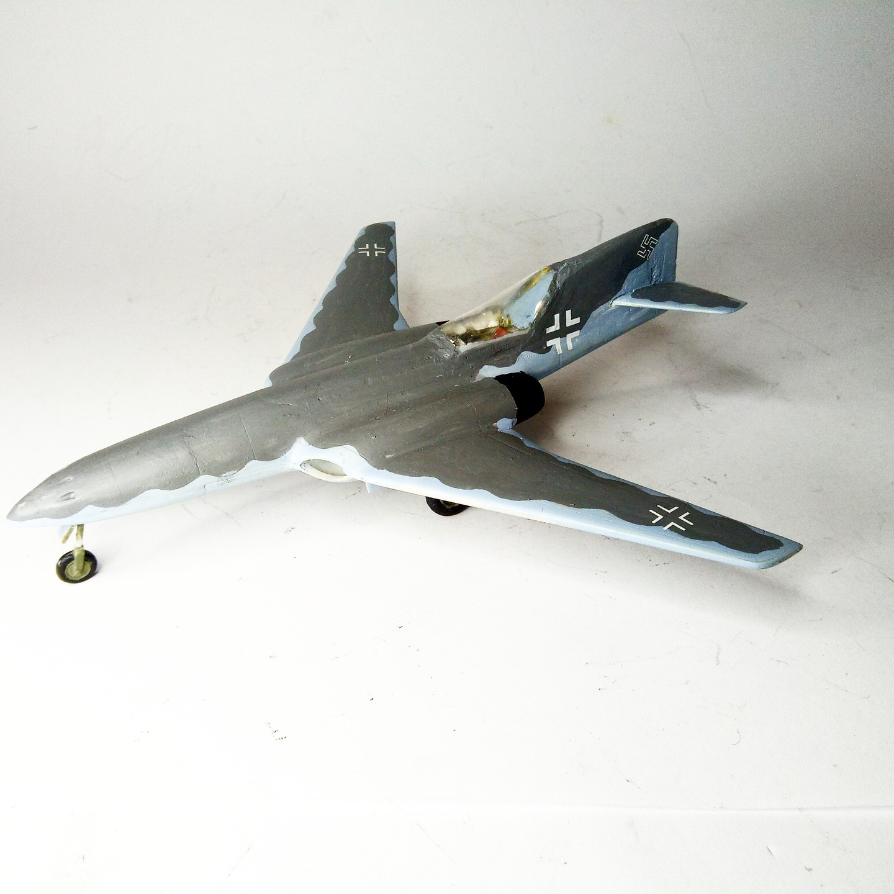
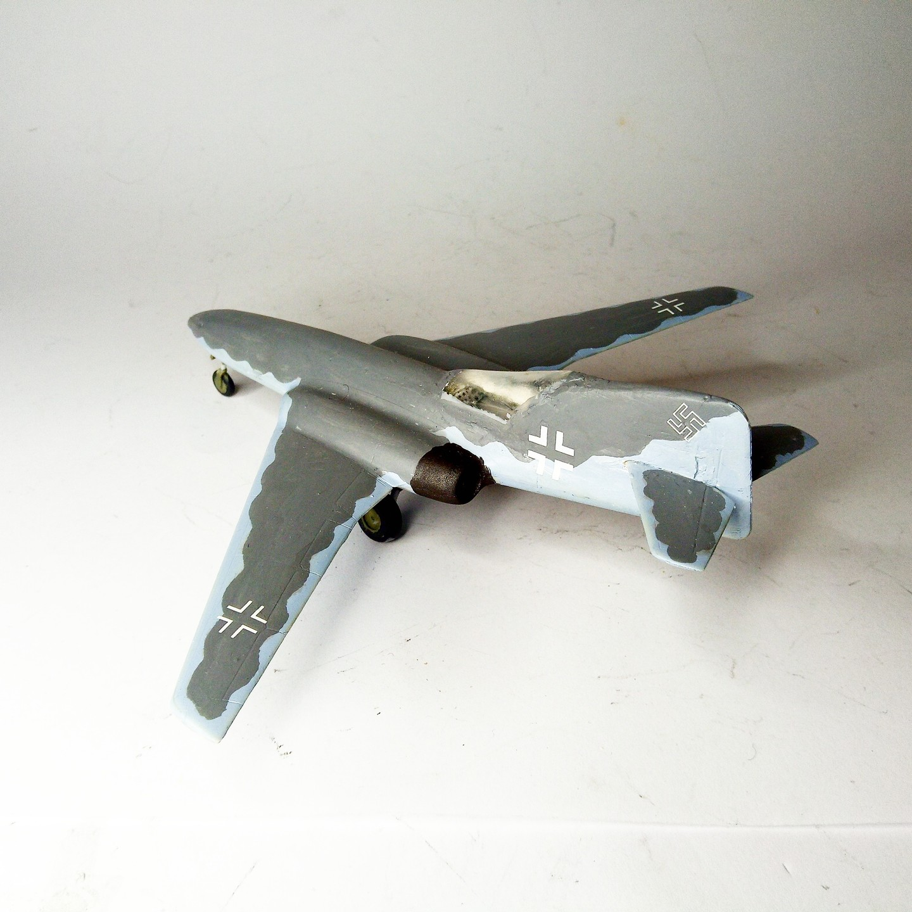

Aerei · scale model archive
Messerschmitt Me262 'Evo'
Messerschmitt Me262 'Evo' — Kit: conversion, Scale: 1/72. Ultimate evolution of the Me262 airframe with engines in the wing roots and cockpit…

Photo gallery

English description
Ultimate evolution of the Me262 airframe with engines in the wing roots and cockpit incorporated in the fin
#1/72 #Conversion #Me262
Descrizione italiana
Evoluzione estrema della cellula del Me262, con motori alle radici alari e abitacolo incorporato nella deriva.